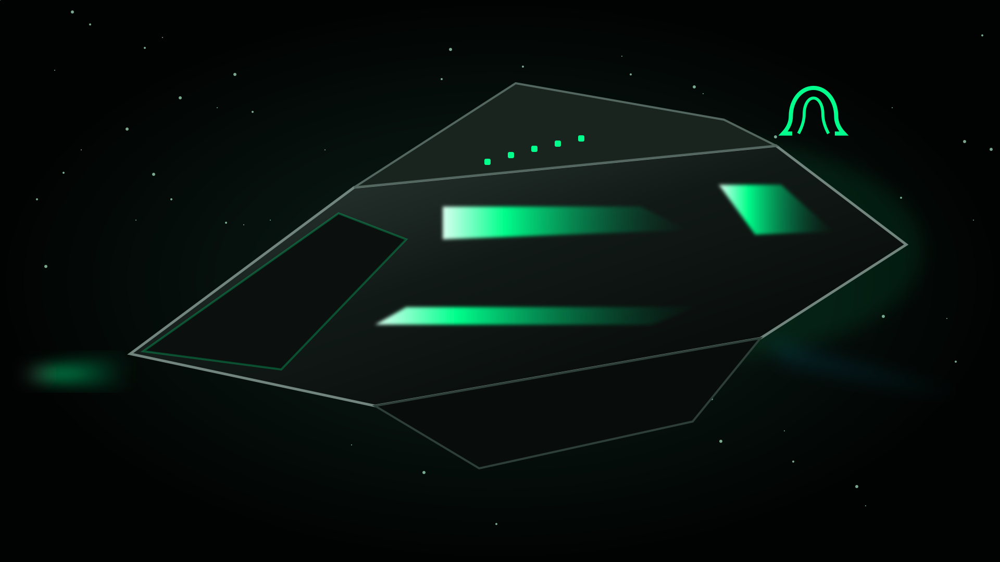

Human first
Technology that expands human agency.
Intelligence beyond limits
De-Omega-Point creates human-value-centric AI, autonomous systems and space infrastructure designed to strengthen life on Earth and expand human capability beyond it.

Technology that expands human agency.
Dignity, transparency and consent built in.
Infrastructure for resilient civilisation.
Systems that return more value than they consume.
Our purpose
By 2050, intelligence will be embedded in civilisation’s essential systems. Our role is to ensure those systems remain accountable to human value.
Give people greater control, capability and access.
Encode ethics into architecture, not marketing copy.
Build intelligence that learns, verifies and self-corrects.
Apply responsible intelligence from communities to orbit.
Flagship space industry initiative
A phased research and commercialisation programme for autonomous operations, orbital logistics, resilient communications and human-centred space habitats.
Technology portfolio
Assistive communication intelligence designed for neurodiverse people, families and teams.
A modular orchestration layer for agents, policies, context and verification gates.
Resilient communications, secure computation and distributed decision systems.
Governance for dignity, consent, transparency, fairness and human control.
Strategic trajectory
Prove systems, secure pilots and establish research partnerships.
Deploy products, grow recurring revenue and expand collaboration.
Integrate Earth and orbital intelligence infrastructure.
Enable sustainable human capability across multiple worlds.
Build the future with us
We are seeking space organisations, research institutions, technology partners, investors and courageous builders aligned with human-value-centric intelligence.